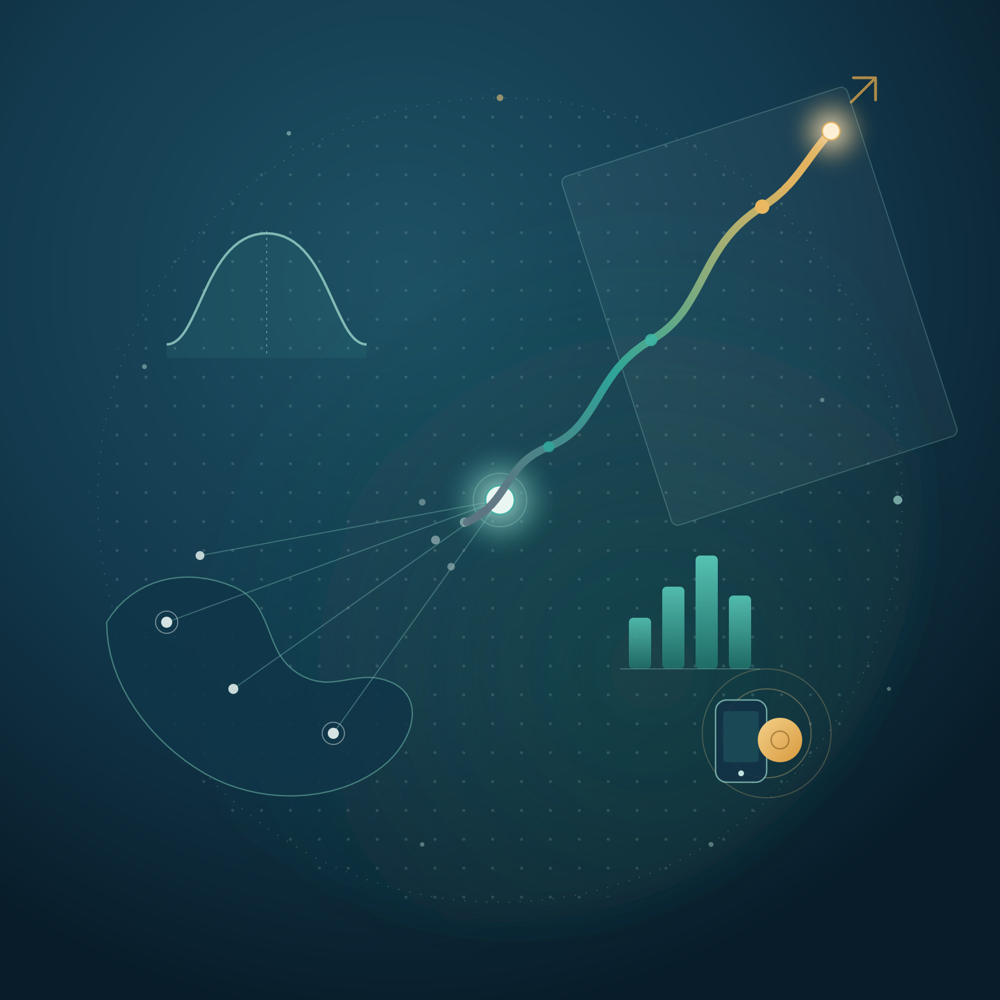
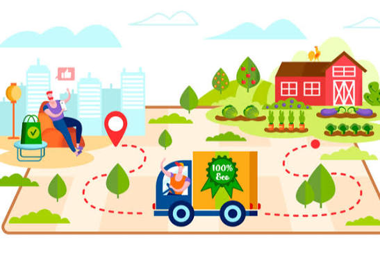

De la structuration d'un système de suivi jusqu'à l'analyse statistique et la mise en forme des résultats — basé à Conakry, curieux de la recherche en santé publique comme de la finance digitale.

Je suis Data Manager & Developer pour CERFIG, un projet de recherche en cohorte de santé publique opérant sur plusieurs sites en Guinée. J'y conçois des outils de gestion des données et des tableaux de bord de suivi, et j'accompagne les analyses statistiques de l'équipe de recherche. En parallèle, je poursuis un Master en Finance Digitale au Dakar Institute of Technology, avec un intérêt particulier pour les écosystèmes de Mobile Money et l'inclusion financière en Afrique de l'Ouest. Je travaille principalement en R et Python, et je publie régulièrement des projets d'analyse de données sur Kaggle pour continuer à apprendre et partager avec la communauté.
Analyse descriptive Analyse inférentielle Modélisation statistique Visualisation de données
R Python SQL Excel
Streamlit Power BI Tableau de bord Reporting
REDCap KoboCollect Contrôle qualité Monitoring DuckDB
PostgreSQL SQL Server ClickHouse
Git Jenkins Linux CI/CD Django Certbot FastAPI n8n
Je publie régulièrement des projets d'analyse de données sur Kaggle, couvrant divers sujets allant de la santé publique à la finance digitale. Ces projets mettent en avant mes compétences en analyse statistique, visualisation de données et développement d'outils interactifs.

Face à une demande croissante et à une concurrence féroce, une grande enseigne de distribution sollicite votre expertise pour identifier les stratégies les plus performantes. Elle souhaite déterminer les produits, régions, catégories et segments de clientèle à cibler ou à éviter.
Consulter